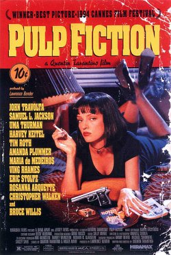

Uma seleção das minhas obras favoritas dirigidas por este cineasta lendário!
Índice da Lista
1. Pulp Fiction: Tempo de Violência

Lançado em , é o marco do cinema independente.
A estrutura não-linear de Pulp Fiction revolucionou a forma de contar histórias nos anos 90.
Tarantino entrega diálogos absolutamente geniais, equilibrando humor negro e tensão de forma brilhante.
Cada cena é icônica, e a trilha sonora é impecável do início ao fim. Porém... não é meu favorito
A jornada de vingança da Noiva começa de forma sangrenta.
Uma verdadeira carta de amor aos filmes de artes marciais e ao cinema asiático. A estética visual é deslumbrante,
e a sequência de luta na Casa das Folhas Azuis é, sem exagero, uma das maiores cenas de ação já coreografadas.
Pura adrenalina e estilo! E esse sim é meu filme favorito, meu pai me mostrou quando eu tinha apenas 12 anos e mesmo
ficando traumatizado com a quantidade de sangue ele mora no meu coração.
Enquanto o primeiro volume é pura ação, Kill Bill: Vol. 2 mergulha fundo na psicologia dos personagens e nos diálogos afiados.
O confronto final com Bill é construído com uma tensão magistral. É a conclusão perfeita e satisfatória
para uma narrativa épica de vingança.
Com atuações avassaladoras (especialmente Christoph Waltz, Jamie Foxx e Leonardo DiCaprio), Django Livre
é um faroeste modernoque mistura história, violência estilizada e uma
jornada de resgate emocionante. O ritmo do filme é impecável, prendendo o espectador a cada segundo.
A homenagem de Tarantino à era de ouro de Hollywood.
Este filme é uma experiência nostálgica e aconchegante. A química entre Rick Dalton e Cliff Booth carrega a história de forma brilhante.
A reconstrução da Los Angeles de 1969 é riquíssima em detalhes, e o final oferece uma catarse fantástica que
só o Tarantino poderia proporcionar.